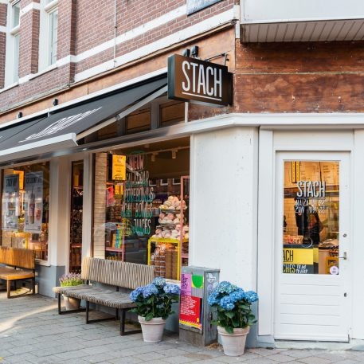

Lekker bezig
Stach weet wat lekker is
Wij bedoelen lekker in de breedste zin van het woord. Lekker vers, lekker gezond, lekker makkelijk, lekker nieuw, lekker lokaal, lekker voor onderweg, lekker om te delen, lekker na de yoga, lekker voor het werk, lekker in het weekend en ook nog eens gewoon heel erg lekker. Bij STACH denken wij elke dag na over hoe wij ervoor kunnen zorgen dat jij de dag goed doorkomt. Dat doen we met gezonde ontbijtjes, verse broodjes en salades voor de lunch, een makkelijke avondmaaltijd, iets lekker zoets om van te genieten en hapjes voor een gezellige borrel. Wij zorgen voor jou, zodat jij kunt doen wat voor jou belangrijk is. Lekker bezig dus.
Nieuwe winkel
Stach op de Jan Piet
Nog meer gezond & duurzaam!
Nu: de Stach app in heel Amsterdam!
Download 'm nu & krijg de eerste koffie van ons!

Assortiment
Lekker nieuw
Locaties
Vind Stach in de buurt
Kom langs in één van onze winkels

Weet je wat ook lekker is?
Kom bij ons werken